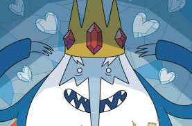

Simon Petrikov, anteriormente conhecido como Rei Gelado é um personagem concebido para ser o principal antagonista de Hora de Aventura. Originalmente retratado como um vilão que sequestra princesas regularmente, a personalidade do personagem foi posteriormente expandida, revelando que ele era um idoso de bom coração, mas incompreendido, com sentidos e moral completamente distorcidos pela sua coroa, sofrendo de solidão e perda de memória. O Rei Gelado tem uma pele azulada, é magrelo e corcunda. Seus olhos são brancos,ele usa uma túnica azul com mangas compridas e sua coroa é decorada com rubis. Também tem uma barba branca bem longa e um nariz muito comprido.